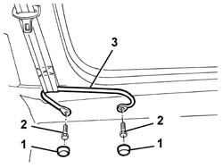
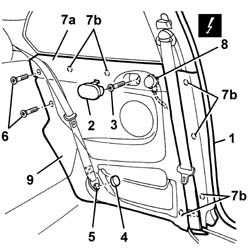
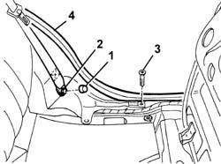
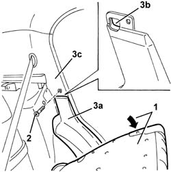

7040H50 rear panel - r r
- Path
- Procedures > 70 FITTINGS > 7040 BODYSHELL INTERIOR TRIMS AND FITTINGS > 7040H roof panel lining > 7040H50 rear panel - r r
- Kind
- repair procedure (removal / refitting; the operation number is the code)
- Applies to
- all engines; all production periods
- Interactive page
- https://sloeber94.github.io/elrnDB-a147/en/#/3025828
Applies to: all engines; all production periods; only with equipment: 3 porte
 Removing
Removing
 Refitting
Refitting7040L40 front compartment scuff strip - r r
7050A22 rear seat cushion - r+r
1. Prise up the bolt covers.
2. Unscrew the bolts
3. Move the seat belt retaining bracket.

Applies to: all engines; all production periods; only with equipment: 3 porte
1. Remove the perimetral seal on the door near the rear side piece area.
2. Remove the ashtray.
3. Unscrew the bolt.
4. Remove the bolt cover.
5. Undo the bolt securing the end of the rear seat belt.
6. Lower the squab and undo the bolts.
7. Disengage the rear side piece (7a) from the inner retainers (7b) using the special tool.
 | Name | Country |
|---|---|---|
7 | Scraper blade | 1.823.015.000 |
8. Disconnect the electrical connections.
 | Name | Connector |
|---|---|---|
8 | Rear left tweeter speaker |
| Name | Connector |
|---|---|---|
8 | Rear right tweeter speaker |
9. Recover the rear side piece.

Applies to: all engines; all production periods; only with equipment: 3 porte
Refitting
RemovingCheck that the rear side piece is not damaged.
Connect the electrical connection
Engage the rear side piece on the inner retainers.
Tighten the bolts and raise the squab.
Positioni the end of the rear seat belt and tighten the bolt.
 | Fastening | Component | Ø | Value (daNm) |
|---|---|---|---|---|
- | Bolt | REAR SEAT BELT END. | M7/16' | 4.0 |
Fit the bolt cover.
Tighten the bolt.
Fit the ashtray.
Fit the perimetral seal on the door frame near the rear side piece.
Position the seat belt mounting bracket and secure it with the bolts.
| Fastening | Component | Ø | Value (daNm) |
|---|---|---|---|---|
- | Bolt | FRONT BELT SLIDING BRACKET. | 7/16" | 4.0 |
Fit the bolt covers.
Applies to: all engines; all production periods; only with equipment: 5 porte
Removing
Refitting7040L44 rear compartment scuff strip - r r
1. Remove the bolt cover.
2. Undo the bolt securing the end of the rear seat belt.
3. Unscrew the bolt.
4. Release the door housing seal in the area of the rear panel.

Applies to: all engines; all production periods; only with equipment: 5 porte
1. Lower the rear seat backrest.
2. Undo the trim fixing bolt.
3. Remove the rear panel (3a) releasing the retainer (3b) from the edeg (3c) of the pillar trim.

Applies to: all engines; all production periods; only with equipment: 5 porte
Refitting
RemovingCheck that the rear side piece is not damaged.
Position the rear panel engaging the retainer under the edge of the pillar trim.
Tighten the bolt fixing the trim.
Lift up the rear seat backrest.
Fit the door housing seal, in the area of the rear panel.
Tighten the bolt.
Positioni the end of the rear seat belt and tighten the bolt.
| Fastening | Component | Ø | Value (daNm) |
|---|---|---|---|---|
- | Bolt | REAR SEAT BELT END. | M7/16' | 4.0 |
Fit the bolt cover.
Topics linked from this page (6)
- 7040L40 front compartment scuff strip - r r
- 7040L44 rear compartment scuff strip - r r
- 7050A22 rear seat cushion - r+r
- 7050A45 STRIKER FOR ATTACHMENT/RELEASE DEVICE for .one( SPLIT rear), seat BACKREST left or right - R.R.
- P47 Rear left tweeter speaker
- P48 Rear right tweeter speaker
Topics that link to this page (23)
- 3340A34 rpm sensor (one) of one l/h or r/h rear wheel - r+r
- 3340A35 left rear wheel rpm sensor - r r
- 3340A37 right rear wheel rpm sensor - r r
- 5505C28 intergrated engine bay and abs system wiring - r r
- 5505C41 cabin wiring - r r
- 5570T94 rear tweeter (one), lh or rh - r r
- 5570T96 rear side speaker - r r
- 5580C40 sidebag sensor (one), lh or rh - r r
- 5580C50 (HEAD- BAG MODULE ) (one), left or right - R.R.
- 5580T20 bose sound system rear speaker (one), lh or rh - r r
- 7030B12 sliding roof (assembly) - r+r
- 7030B40 drainage channel - r r
- 7030B50 sun roof guide , one , lh or rh - r r
- 7035C52 (One), side WINDOW left or right - R.R.
- 7035C54 side window one lh or rh r r includes cleaning of housing
- 7040B06 side trim (one) lh or rh, load compartment/load platform - r r
- 7040H10 roof panel lining - r r
- 7040H16 roof panel lining - r r
- 7040H38 central pillar upper element - r r
- 7040H42 rear pillar trim - r r
- 7065A12 front seat belt (one), lh or rh, with pretensioner on wheel - r r
- 7065A18 Front set belt HEIGHT ADJUSTER , (one), left or right - R.R.
- 7065B10 l/h or r/h rear safety belt (one) - r+r